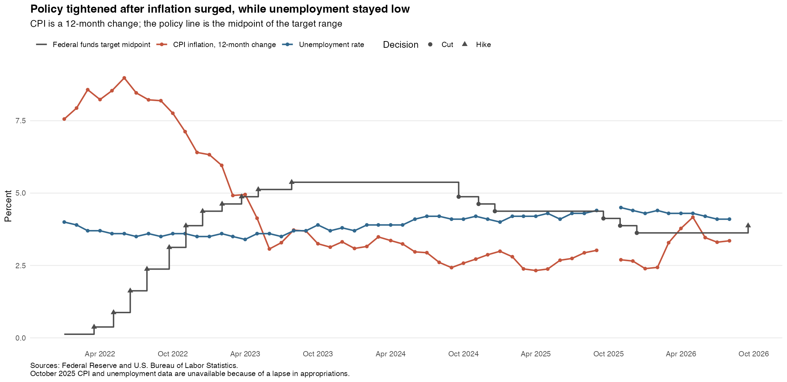
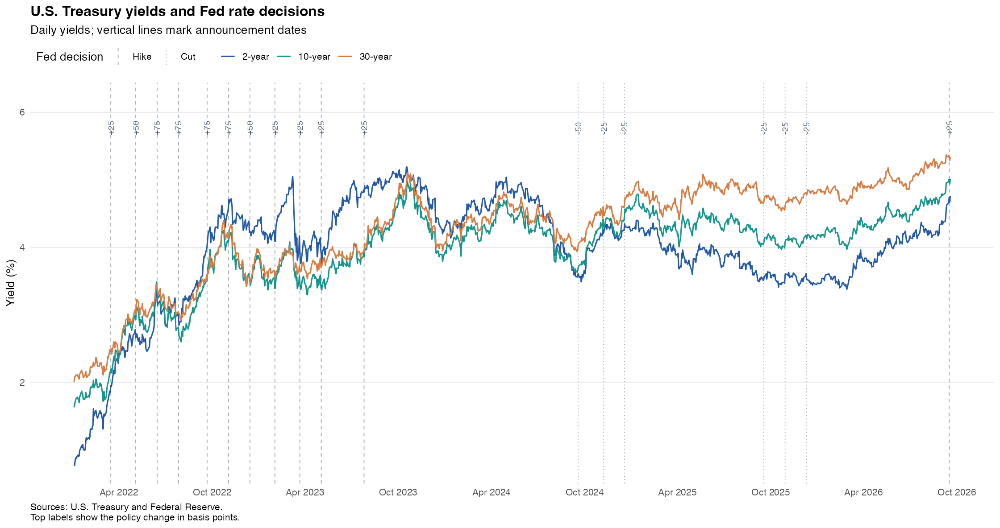
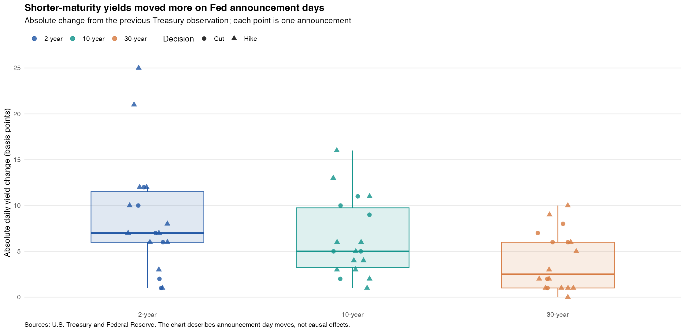

One Policy, Two Mandates, Three Treasury Reactions
Higher interest rates can slow spending and inflation, but they can also weaken hiring and make borrowing more expensive. The Fed must balance price stability with maximum employment, while the Treasury finances government debt at market rates. Since 2022, has the Fed brought inflation down without a sharp rise in unemployment—and has that progress come with pressure on longer-term borrowing costs? Tracking both the economy and the yield curve helps distinguish progress toward the dual mandate from the financial costs that may accompany it.
From public pages to comparable data
I used rvest to extract 2-, 10-, and 30-year yields from the U.S. Treasury’s daily tables and 2020–2023 archive; policy changes and target ranges from the Federal Reserve’s policy history; and announcement dates from statements linked on its FOMC calendar. The Bureau of Labor Statistics supplies the CPI index and unemployment rate. Saved snapshots cover January 2022 through August 2026 for macro data and September 18, 2026 for yields.
page <- read_html(treasury_url)
yield_table <- page |>
html_elements("table") |>
html_table(fill = TRUE)I converted the seasonally adjusted CPI index into its 12-month percentage change and measured each Treasury yield’s announcement-day move against the previous trading day’s close:
inflation_yoy_pct <- 100 * (cpi_index / lag(cpi_index, 12) - 1)
yield_change_bp <- 100 * (yield_today_pct - yield_previous_pct)The data cover 1,178 Treasury trading days, 56 monthly macro observations, and 18 verified rate changes. All sources are open official pages; no login, paywall, or access restriction was bypassed.
The policy path and the dual mandate
The full schedule shows an unusually concentrated tightening phase, followed by a later easing cycle and the most recent increase.
| Announcement | Decision | Change (bp) | New target range (%) |
|---|---|---|---|
| Mar. 16, 2022 | Hike | +25 | 0.25–0.50 |
| May 4, 2022 | Hike | +50 | 0.75–1.00 |
| Jun. 15, 2022 | Hike | +75 | 1.50–1.75 |
| Jul. 27, 2022 | Hike | +75 | 2.25–2.50 |
| Sep. 21, 2022 | Hike | +75 | 3.00–3.25 |
| Nov. 2, 2022 | Hike | +75 | 3.75–4.00 |
| Dec. 14, 2022 | Hike | +50 | 4.25–4.50 |
| Feb. 1, 2023 | Hike | +25 | 4.50–4.75 |
| Mar. 22, 2023 | Hike | +25 | 4.75–5.00 |
| May 3, 2023 | Hike | +25 | 5.00–5.25 |
| Jul. 26, 2023 | Hike | +25 | 5.25–5.50 |
| Sep. 18, 2024 | Cut | −50 | 4.75–5.00 |
| Nov. 7, 2024 | Cut | −25 | 4.50–4.75 |
| Dec. 18, 2024 | Cut | −25 | 4.25–4.50 |
| Sep. 17, 2025 | Cut | −25 | 4.00–4.25 |
| Oct. 29, 2025 | Cut | −25 | 3.75–4.00 |
| Dec. 10, 2025 | Cut | −25 | 3.50–3.75 |
| Sep. 16, 2026 | Hike | +25 | 3.75–4.00 |
Four milestones make the macroeconomic sequence easier to see. Monthly values refer to the observation month, and the policy rate is the target-range midpoint then in effect.
| Milestone | Month | Policy midpoint (%) | CPI inflation (%) | Unemployment (%) |
|---|---|---|---|---|
| First hike | Mar. 2022 | 0.38 | 8.6 | 3.7 |
| Last hike before easing | Jul. 2023 | 5.38 | 3.3 | 3.5 |
| First cut | Sep. 2024 | 4.88 | 2.4 | 4.1 |
| Latest macro data | Aug. 2026 | 3.63 | 3.4 | 4.1 |

The first phase suggests that inflation could fall sharply without a large employment setback. During 2022–2023, the Fed raised its policy midpoint above 5% to restrain spending and price pressure. Inflation fell from its 9.0% peak to 3.3% by October 2023, while unemployment was 3.9%, close to its 4.0% starting level. This is consistent with progress toward both mandates, although policy was not the only influence. Keeping rates high then allowed restraint to continue: by August 2024 inflation had fallen to 2.6%, while unemployment had edged up to 4.2%. The improving inflation picture and softer labor market help explain the shift toward cuts in September. Through 2025, inflation generally fluctuated around 2.5–3%, but unemployment reached 4.4% by September, strengthening the case for supporting demand. Cuts do not directly suppress inflation; they can follow earlier disinflation while its effects continue. The balance shifted again in spring 2026: inflation rose to 4.2% in May, then eased to 3.4% in August, while unemployment declined to 4.1%. Renewed price pressure alongside a firmer labor market provides an economic rationale for the September hike. Its effects are not yet observable here. CPI illustrates the pattern; the Fed’s formal inflation goal uses PCE prices.
Three maturities, one policy cycle
The yield summary compares January 3, 2022 with September 18, 2026; peaks are sample highs.
| Maturity | Start (%) | Sample peak (%) | Peak date | Latest (%) |
|---|---|---|---|---|
| 2-year | 0.78 | 5.19 | Oct. 17, 2023 | 4.76 |
| 10-year | 1.63 | 5.01 | Sep. 16, 2026 | 5.01 |
| 30-year | 2.01 | 5.37 | Sep. 10, 2026 | 5.34 |

During 2022–2023, all three yields rose, but the 2-year became the highest and peaked at 5.19%. Investors appeared to expect high rates now, but lower rates later. That explains why lending for longer did not always earn a higher yield: expected future rate cuts could outweigh the extra compensation investors require for long-term uncertainty, called the term premium. By October 2024, the usual ordering had returned, with the 30-year above the 10-year and 2-year. During 2025, shorter yields declined more, widening the 30-minus-2-year gap from 0.61 percentage points in January to 1.07 in October. Expected easing can explain relief at the short end; continuing inflation uncertainty or greater government borrowing could help explain why long yields remained elevated. In 2026 the short end rose again, narrowing that gap, yet the latest 10- and 30-year yields were still 5.01% and 5.34%. Earlier policy cuts had not delivered lasting relief in long-term borrowing costs. Those high yields can make government refinancing and private loans linked to Treasury rates more expensive. The chart reveals this financing pressure, though it cannot identify which underlying driver caused it.
The announcement-day distribution makes that maturity contrast more direct.
| Maturity | Meetings | Mean absolute move (bp) | Median (bp) | Maximum (bp) |
|---|---|---|---|---|
| 2-year | 18 | 8.7 | 7.0 | 25 |
| 10-year | 18 | 6.4 | 5.0 | 16 |
| 30-year | 18 | 3.9 | 2.5 | 10 |

Announcement-day yield movements were largest at two years and smallest at thirty years: median absolute changes were 7.0, 5.0, and 2.5 basis points. This fits the way policy reaches bond markets. A 2-year yield depends heavily on the next few years of policy, while a 30-year yield also reflects rates and risks far beyond the current cycle. A change in the near-term outlook therefore tends to matter more for the shorter maturity. When yields rise, new borrowing becomes more expensive and existing bond prices fall, extending policy’s reach beyond overnight lending. The practical distinction is that short yields respond more to near-term policy news, but long bonds can still suffer substantial price losses because a given yield increase affects their value more. These daily moves include anticipation and other news, so they show a pattern consistent with transmission rather than a precise causal effect.
So, did the Fed pull it off?
Policy rates can help balance inflation and employment, but that balance needs continued adjustment. Inflation fell from roughly 9% to 2.4% by the first cut, while unemployment reached 4.1% without surging—a pattern consistent with progress toward the Fed’s dual mandate. Inflation’s later rebound to 3.4% shows that the task was unfinished. Further tightening could help if price pressure persists, but excessive tightening risks weakening hiring; easing too soon risks reviving inflation. These observations support a careful balancing act, not proof that policy alone caused the improvement.
Policy also reaches Treasury yields, with stronger announcement-day reactions at shorter maturities: median moves were 7.0, 5.0, and 2.5 basis points. Yet 10- and 30-year yields above 5% show that earlier cuts did not ensure cheap long-term financing. Further hikes could increase borrowing costs, but credible inflation control could also reassure lenders and bring long yields down. The policy challenge is to reduce inflation without unnecessarily weakening jobs or adding to financing pressure. Success should therefore be judged by inflation, employment, and borrowing conditions together—not by the rate decision alone.
Sources and reproducibility. U.S. Treasury daily par yields; Federal Reserve target-rate history, FOMC calendar, and policy statements; U.S. Bureau of Labor Statistics CPI and unemployment tables. See the full replication guide, the README, and the analysis repository. The analysis uses saved public-page snapshots and records source URLs and file fingerprints in the analysis repository’s results/ folder.